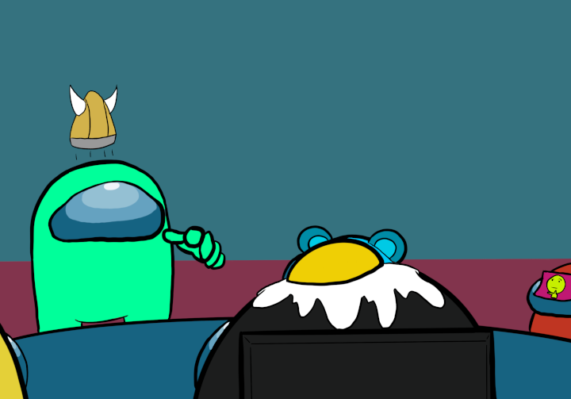

First Discussion
After a body is reported, everyone gathers at the cafeteria to discuss about who has ben killed and if there are any possible leads. The moment everyone is seated, Green accuses you of killing White in the hallway outside of the reactor and the camera room. This is obviously not true, but since no one else was there to witness the killing, there is good reason to be suspicious of you. Now, what will you say?